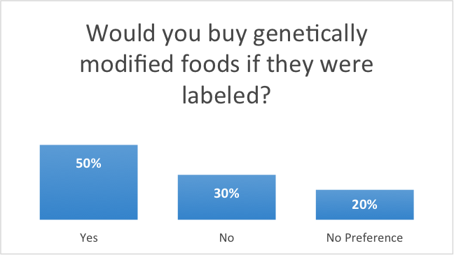
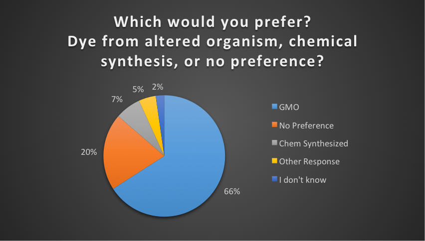
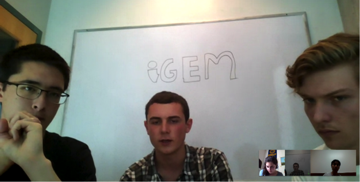
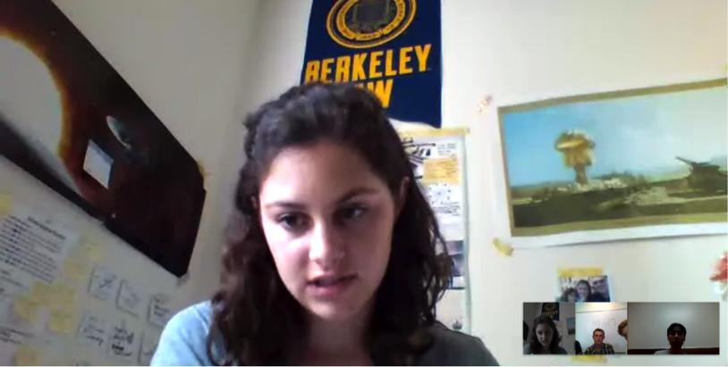
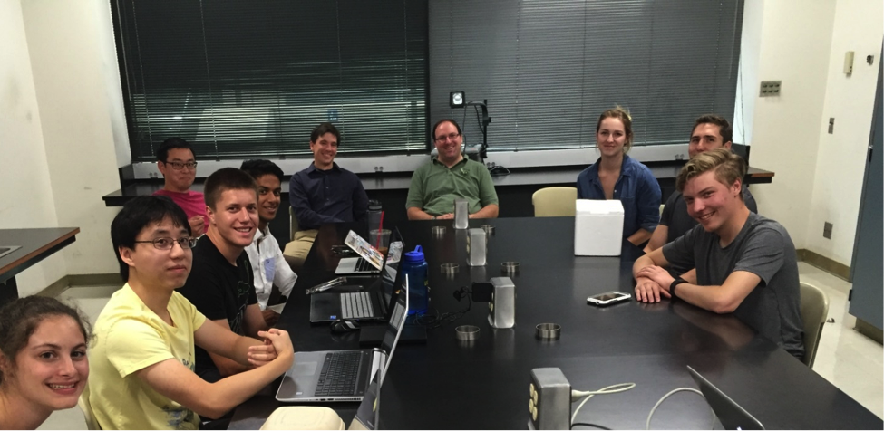
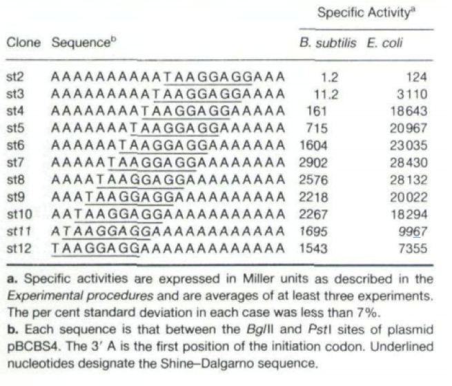

<div class="container">
	<div class="row row-centered">
		<div class="col-xs-12 col-centered">
			<h1 class = "blue">Collaboration</h1>
<p>UC Davis iGEM team has benefitted and supported the UC Santa Cruz iGEM team this year.</p>
<p>&nbsp;</p>
<h3>Abstract:</h3>
<ul class = "abstract">
<li>Collaboration on Human Practices: Both teams followed Institutional Review Board review process and received exemption for our surveys. We asked very similar questions and shared our results. A few visualizations of this data are in the full report.</li>
<li>Collaboration on <em>Bacillus subtilis</em>: Both of our teams worked to create products for the human food system. In order to ensure that our results would be safe by design, we found ourselves similarly situated in learning and experimenting with <em> subtilis</em>. The UC Davis team shared several <em>B. subtilis </em>strains with permission from the Bacillus Genetic Stock Center, as well as protocols from both the stock center and advisers.</li>
</ul>
<p>&nbsp;</p>
<p>Full Report:</p>
<p>Human Practices&mdash;</p>
<p>The Human Practices Collaboration included a survey that complied with IRB regulations. To see these regulations in greater detail, please see the guide, including details about both UC Davis and UC Santa Cruz&rsquo;s respective IRB systems as well as our consent disclosures (link). We worked to ensure that both teams went through the required human subjects trainings and that these interventions were carried out to the highest ethical standards. We had multiple skype meetings, met up at the UC Bioengineering Symposium, and shared a meeting with some team members over the summer.</p>
<p>Between the two teams, we collected 44 responses. Some initial analysis is visible here:</p>
<br>
<div class = "centered">


</div>
<hr>

<p>The results are further analyzed throughout the wiki, and have provided an essential resource in coming to our policy conclusions.</p>
<p>Here are pictures of our teams meetings:</p>
<div class="centered">
	
	
	
</div>
<p>&nbsp;</p>
<p>&nbsp;</p>
<p>&nbsp;</p>
<p><em>Bacillus subtilis</em>:</p>
<p>&nbsp;</p>
<p>The UC Davis team shared the following information and plates containing the following strains with the UC Santa Cruz team on their visit July 5<sup>th</sup>:<br /> </p>
<p>&ldquo;On the&nbsp;<em>Bacillus subtilis&nbsp;</em>side of the project, our team is performing extensive research on the best Bacillus strains and Promotor/RBS/Terminator sequences for maximum throughput gene expression. Our team is also researching optimal design of these components (monocystronic/polycystronic and others routes). It would be great to collaborate on this research and potentially save both of our teams valuable time and resources.</p>
<p>&nbsp;</p>
<p>Our team has ordered&nbsp;<strong>B. subtilis K07 - BGSC Accession # 1A1134</strong>. This strain was recently released and this K07 strain is generated from the commonly used laboratory host PY79. This strain has all it's seven associated proteases knocked out and is free from antibiotic resistance or integrated plasmids. This strain does produce spores however.</p>
<p>&nbsp;</p>
<p>We have also ordered the&nbsp;<strong>B. subtilis PY79 - BGSC Accession # 1A747</strong>, which is the wildtype strain of the K07 protease knockout. We are selecting this strain so we have a control for comparison.&nbsp;</p>
<p>&nbsp;</p>
<p>A third strain which our team has ordered is the&nbsp;<strong>B. subtilus spo0A3&nbsp;</strong>-&nbsp;<strong>BGSC Accession # 1S1.&nbsp;</strong>This strain comprises spo0A mutants, therefore they do not produce alkaline or neutral proteases. They also do not sporulate. The two most abundant secreted proteases are the alkaline protease (AprE) and the neutral protease (NprE) and are produced in the early stationary phase in normal bacillus. This mutant does not produce these proteases, however wall-associated proteases are still present. This strain is the result of mutations in the Spo0A locus and have normal antibiotic sensitivities. Note that Spo0A have reduced genetic competence, so it may be advisable to use electroporation to transform them.</p>
<p><br /> </p>
<p>These strains are soon to be released within the next 2 weeks by the BGSC; we plan on ordering them immediately upon release.</p>
<ul>
<li>&nbsp;&nbsp;&nbsp;&nbsp;&nbsp;&nbsp;&nbsp;<strong>KO8 - </strong><strong>Protease-free strain knocked out in the BsuM restriction endonuclease (which will help with plasmid transformations) retaining wild-type levels of genetic competence (</strong><strong>available by July 4<sup>th</sup> or earlier</strong><strong>)</strong></li>
<li>&nbsp;&nbsp;&nbsp;&nbsp;&nbsp;&nbsp;&nbsp;<strong>KO9 - </strong><strong>Protease-free strain knocked out in the sigF gene which will be blocked at an early stage of sporulation and retains wild-type levels of genetic competence (</strong><strong>available by July 4<sup>th</sup> or earlier</strong><strong>)</strong><br /> </li>
</ul>
<p>&nbsp;</p>
<p><u>We have also selected some&nbsp;promoters</u>:</p>
<p>&nbsp;</p>
<p><strong>Pveg -&nbsp;</strong>which is a very strong constitutive promotor</p>
<p><strong>Gram-Positive IPTG-Inducible Promotor-</strong>&nbsp;Strong inducible&nbsp;promoter</p>
<p><strong>PliaG -&nbsp;</strong>Constitutive weak promoter</p>
<p><strong>PlepA-</strong>&nbsp;Strong constitutive promoter</p>
<p>&nbsp;</p>
<p><u>For Bacillus RBS</u>&nbsp;we are using the strong consensus sequence&nbsp;<strong>AAAGGAGG</strong>&nbsp;as published in&nbsp;<a href="http://www.ncbi.nlm.nih.gov/pubmed/10446248">http://www.ncbi.nlm.nih.gov/pubmed/10446248</a></p>
<p>Note that increasing nucleotide spacing from the initiation codon to this consensus sequence (the <em>Shine Dalgarno </em>sequence) results in different activity which must be carefully considered.</p>
<div class="centered">
	
</div>
<p><br /> </p>
<p><u>Our current terminator is Part: <strong>BBa_K780000</strong></u></p>
<p><strong><u><br /> <br /> </u></strong></p>
<p><u>We also have another terminator identified:</u></p>
<p><strong>Gene</strong>: senS <br /> <strong>Operon</strong> Name: senS <br /> <strong>Terminator position</strong>: 959501..959518 <br /> <strong>Gibbs free E:</strong> -7.2 <br /> <strong>Sequence: </strong>AAAAACCCGCTGACTACAACGGGTTTTTGCATTTCTCC<br /> <strong>Evidence:</strong> upstream and downstream gene are on the opposite strand <br /> <strong>Reference:</strong> Genbank M34826 <br /> <strong>Comments: </strong>bidirectional terminator</p>
<p>More info: <a href="http://dbtbs.hgc.jp/COG/prom/senS.html">http://dbtbs.hgc.jp/COG/prom/senS.html</a><strong><u><br /> <br /> </u></strong></p>
<p>&nbsp;</p>
<p>From here, we are now concerned with transformation protocols and expression complexes.&rdquo;</p>
<p>Since the sharing of this information, both teams have adjusted projects to focus on expression of genes in <em>E. coli. </em></p>
<p>&nbsp;</p>
<p>&nbsp;</p>
<p>I'd love to see what your analysis looks like! Let's agree to credit each other for the charts, too. I'm sure that goes unsaid, but that way we'll each have charts on the wikis that say Santa Cruz and Davis to emphasize integration, and also you won't get docked for my tenuous grasp on what data analysis looks like. For the record that 50-20-30 split is ACTUALLY how the responses worked out!&nbsp;</p>
<p>&nbsp;</p>
<p>&nbsp;</p>
<p>&nbsp;</p>
<p>&nbsp;</p>
<p>&nbsp;</p>
		</div>
	</div>
</div>